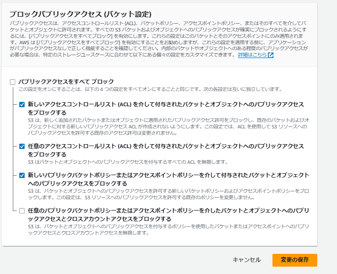

AWSとは
AWSとはAmazon Web Servicesの略。
ライバルにはGCP（Google Cloud platteformがある）
100以上のクラウド関連のサービスを提供する。
amazon商品を扱いAPI,s3など、AWSを知らなくてもサービスだけよく耳にする。
最近はDocker関連のECRというサービスが有名だろうか。
s3: AWSコンソールで作成するための忘備録
-
s3はAWSコンソール画面から作成できる。サービス一覧からs3を選択しバケットを作成します。
バケットは世界的グローバルで唯一の名前にする必要があります。
パケット作成の際は、「ACL無効」を選択する。
-
バケットはパブリックアクセスの許可が必要です。
【設定画面へのアクセス】
Amazon S3→バケット→[]あなたのバケット名]→アクセス許可タブ→ブロックパブリックアクセス (バケット設定)の編集ボタン押下
【設定方法】
「任意のパブリックバケットポリシーまたはアクセスポイントポリシーを介したバケットとオブジェクトへのパブリックアクセスとクロスアカウントアクセスをブロックする」だけチェックを外し、あとはブロックで問題ないと思われます。

-
パケットポリシーを設定する。
パケットポリシーの設定例
{
"Version": "2012-10-17",
"Statement": [
{
"Sid": "Statement1",
"Effect": "Allow",
"Principal": {
"AWS": "*"
},
"Action": "s3:*",
"Resource": "arn:aws:s3:::あなたのバケット名/*"
}
]
}
-
WEBシステムなど他のプロジェクトからs3にアクセスするには「アクセスキーID」と「シークレットアクセスキー」が必要。
「アクセスキーID」と「シークレットアクセスキー」を作成するには AWSコンソールにて IAMユーザーを作成する。
作成したIAMユーザーの設定情報から取得可能。
勘違いしがちだがIAMユーザーでs3を作成したり編集するわけではない。あくまでアクセスIDとシークレットアクセスキーを提供するだけの役割でしかない。
xxx
- ホーム
- プログラミングの覚書
- AWSの覚書
- AWSの覚書